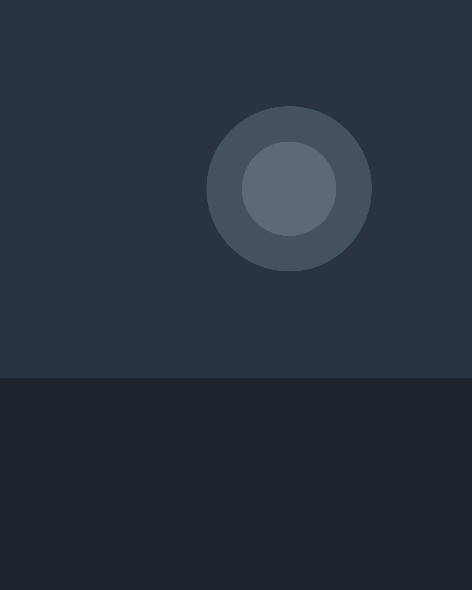
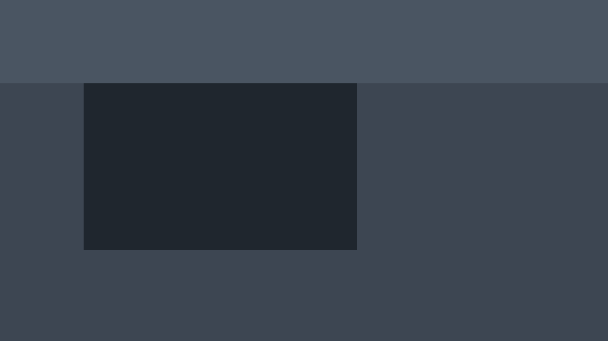
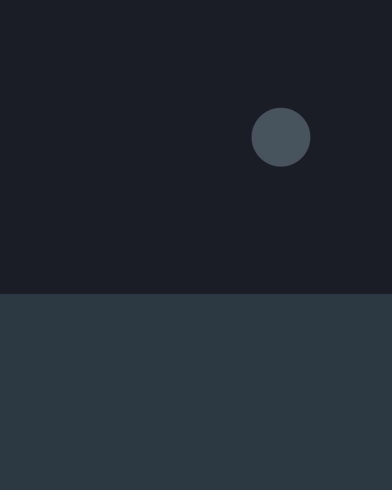

Fiction Short, 2026
Aura
- Role: Director
- 2026

A young woman returns to a familiar apartment and finds the rooms slightly out of step with her memory. Between observation and constructed situation, AURA follows the invisible tensions that surface when intimacy has to be renegotiated in a space that no longer quite belongs to anyone.

